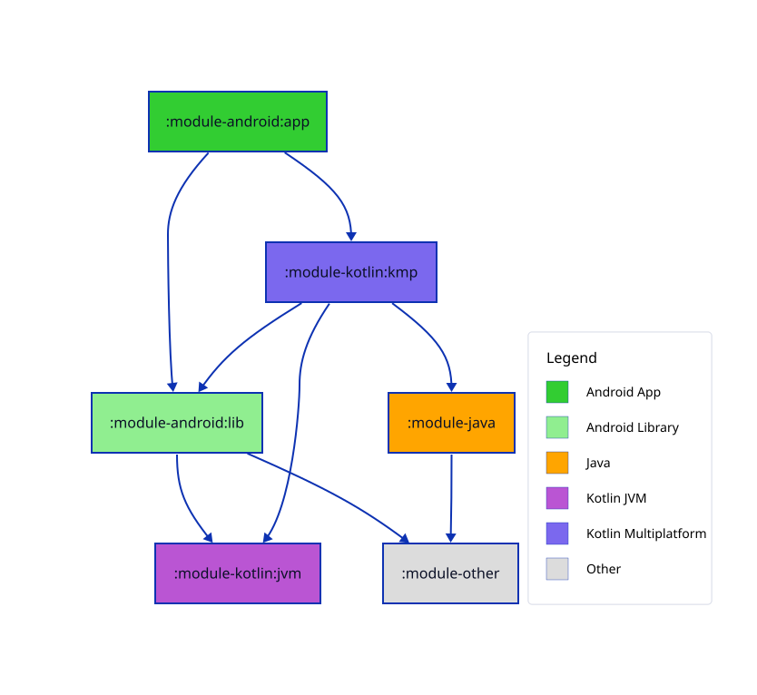

Common Usage¶
Overview¶
Configuration is primarily done via the atlas Gradle extension function, accessible in your root build file. See here for the KDoc, or here for the source file.
// none of these are required - these values are the defaults
atlas {
alsoTraverseUpwards = false
checkOutputs = true
displayLinkLabels = false
generateOnSync = false
groupModules = false
ignoredConfigs = setOf("debug", "kover", "ksp", "test")
ignoredModules = emptySet<String>()
printFilesToConsole = false
moduleTypes {
// ...
}
linkTypes {
// ...
}
pathTransforms {
// ...
}
}
Alternatively, if calling from a buildSrc Kotlin file (or similar):
project.extensions.configure<AtlasExtension> {
// ...
}
Any other configs beyond these are specific to the particular plugin you applied, see:
Properties¶
alsoTraverseUpwards¶
atlas {
alsoTraverseUpwards = true
}
If enabled, the generated module graph will also go "upwards" (showing modules depending on this one) as well as the default "downwards"( modules being consumed by this one).
Examples below from the perspective of :android:lib:
checkOutputs¶
atlas {
checkOutputs = true
}
If enabled, a diffing task will be attached to gradle check. It will verify that your generated charts match the current state of the project layout, failing if not with a useful error message. Enabled by default.
The generated task name will depend on your chosen framework (D2, Mermaid or Graphviz) and the file type that you're checking (Chart or Legend), e.g. checkD2Chart or checkGraphvizLegend.
Even if this option is disabled, the task will still be created, it just won't be attached to gradle check.
displayLinkLabels¶
atlas {
displayLinkLabels = true
linkTypes {
api(style = LinkStyle.Bold, displayName = "API")
implementation(LinkStyle.Dashed, color = "red")
}
}
When enabled, a string label is attached on each module link, showing which configuration caused represents the link. When true, the LinkTypeSpec.name property will be used. Disabled by default.
Requires some linkTypes to be declared - otherwise this will have no effect.

generateOnSync¶
atlas {
generateOnSync = true
}
When enabled, syncing your IntelliJ IDE (including Android Studio) will automatically trigger regeneration of your module diagrams. Disabled by default.
Danger
Be careful enabling this on larger projects - sync time might extend quite a bit.
groupModules¶
atlas {
groupModules = true
}
Set to true if you want module charts to gather together groups of modules into bordered containers. E.g. a graph with ":a", ":b" and ":c" won't be grouped at all because they don't share any path segments, but ":a:b" and "a:c" will be grouped together. Disabled by default.
Tip
Remember this will have no effect if your modules aren't nested at all.
Warning
Automatic layout generation will get a bit complicated for larger projects when using grouping.
ignoredConfigs¶
atlas {
ignoredConfigs = setOf("debug", "kover", "ksp", "test")
}
Use this to configure Gradle Configurations to ignore when collating module diagrams. Gradle does have a load of configurations floating around (depending on your project) - most of which will be practically useless when generating a diagram like this.
Defaults to setOf("debug", "kover", "ksp", "test").
Remember
If you don't ignore any configurations, you might end up with double links between modules - or broken builds
ignoredModules¶
atlas {
ignoredModules = setOf(
":path:to:some:module",
".*:test:.*", // uses regex patterns
)
}
Defaults to an empty set.
printFilesToConsole¶
atlas {
printFilesToConsole = true
}
Set to true to print the absolute path of any generated files to the Gradle console output. You can use this to help with scripting, if you like.
Disabled by default.
Functions¶
moduleTypes¶
Use the moduleTypes block to identify module categories, along with the styling to apply to each one in the output chart. These stylings will depend on your choice of plugin (see their docs for details), but at a minimum, each with support setting:
- label string
- color, as a CSS color string (
"chartreuse") or hex string ("#7FFF00") - matcher, used to decide whether a given module should match this type:
- pathContains - checks whether the module path (
":modules:path:to:my:module") contains a given string. Case sensitive. - patchMatches - same as
pathContains, but uses Regex pattern matching. You can also pass aregexOptionsparameter to configure this more specifically, if you need. - hasPluginId - checks whether the module has applied the given plugin ID string, e.g.
com.android.applicationororg.jebtrains.kotlin.jvm.
- pathContains - checks whether the module path (
Only one of these three module matchers should be specified.
Sample usage:
atlas {
moduleTypes {
hasPluginId(
name = "UI",
color = "#ABC123",
pluginId = "org.jetbrains.kotlin.plugin.compose",
)
pathMatches(
name = "Data",
color = "#ABCDEF",
pathMatches = ".*data$".toRegex(),
)
pathContains(name = "Domain", pathContains = "domain") {
// some custom config can go as a trailing lambda
// the available options here depends on the plugin variant
}
}
}
A few module type quick-access functions are built into Atlas for use in the moduleTypes block if you need them:
atlas {
moduleTypes {
androidApp()
androidLib()
java()
kotlinJvm()
kotlinMultiplatform()
other()
// or useDefaults() to quickly add all of the above
}
}
Warning
Remember that the order of declaring module types does matter! When identifying a module, Atlas will use the first one and go down the list until it finds a match.
The below example shows one module of each of the built-in module types in a sample D2 project layout:

Remember also that you can pass framework-specific configuration options into any module type declarations used above, with a trailing lambda. Example below comes from D2:
atlas {
moduleTypes {
androidApp {
shape = Shape.Hexagon
strokeWidth = 10
}
kotlinMultiplatform()
androidLibrary {
fontColor = "red"
}
}
}
linkTypes¶
Use this block to configure categories of link to be detected in your project and drawn onto the modules chart. These are detected by Gradle's configuration names. In most cases you'll probably use api and implementation as your main link types, so these are available as quick-access config functions:
atlas {
linkTypes {
implementation(color = "red")
api(style = LinkStyle.Bold) {
// custom config here - plugin-specific
}
}
}
Tip
The style parameter on each of these will have different available options for each plugin. See the LinkStyle enum implementations for each one:
- Graphviz: Bold, Dashed, Dotted, Invis, Solid, Tapered. See here for details - specifically for "edges"
- Mermaid: Basic, Bold, Dashed, Invisible. See here for details
- D2: Basic, Bold, Dashed, Dotted, Invisible. See here for details
Besides the default api and implementation, you can declare links representing other Gradle configurations too:
atlas {
linkTypes {
// All parameters are optional
"compileOnly"(
style = LinkStyle.Dotted,
color = "#ABC123",
displayName = "Compile-Only",
)
}
}
Warning
As with module types, remember that the order of declaration matters! Top takes priority. So if you define "implementation" before "testImplementation", you won't get any links matching the latter because they all also match the former.
pathTransforms¶
This is a little API for modifying module paths when inserting them into any generated diagrams. For example if your modules are all within a "modules" directory in your project's root, you might want to call something like:
atlas {
pathTransforms {
// ":modules:path:to:something" => "path:to:something"
remove("^:modules:")
// "path:to:something" => "path to something"
replace(":", replacement = " ")
}
}
Remember the declarations inside pathTransforms are called in descending order. It does not support regex group replacement (yet?) - regex is only used for pattern matching.
Extra properties¶
Several components in Atlas make use of the PropertiesSpec interface, which allows you to apply arbitrary key-value pair properties to the interfaces that make use of it. Specifically, you can call put("key", value).
The intention with this is to let you pass in anything to the scope in question - allowing you to make use of any new APIs in that framework which haven't been explicitly implemented in Atlas. Any usage of these keys is up to you to validate - sometimes the diagram framework won't give you a warning if you pass in an invalid key. If you have some brand-spanking new attribute that you want to apply somewhere:
atlas {
moduleTypes {
// no custom config necessary
androidApp()
// but if you want to, use a trailing lambda:
hasPluginId("Custom", pluginId = "com.custom.plugin") {
// built-in setters for some known properties, depending on the context
fill = "red"
render3D = true
}
// standard colors/styles in the brackets, everything else in the lambda
java(color = "orange") {
// or custom setters for undefined properties
put("insertKeyHere", "some-value")
}
}
linkTypes {
// no custom config necessary
api()
// again with the trailing lambda:
implementation {
animated = true
strokeWidth = 100
}
}
d2 {
layoutEngine {
elk {
algorithm = ElkAlgorithm.Layered
put("anotherElkProperty", 420)
}
}
rootStyle {
strokeDash = 5
doubleBorder = true
put("somenewbool", true)
put("somenewint", 123)
put("somenewstring", "yes")
}
}
}
These examples are not exhaustive - you can do the same with many components in Mermand and Graphviz too. If you're using some API for customising styles - have a look at the API spec for that class to see what else is available.